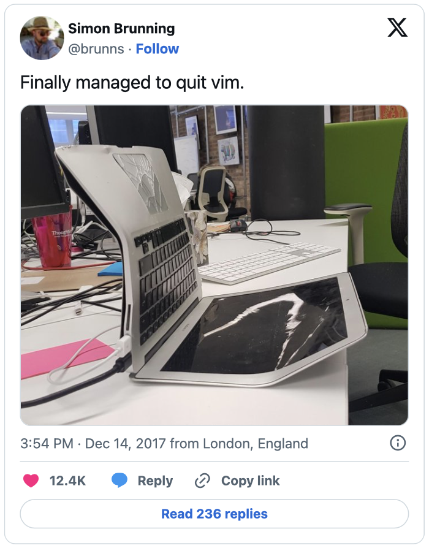
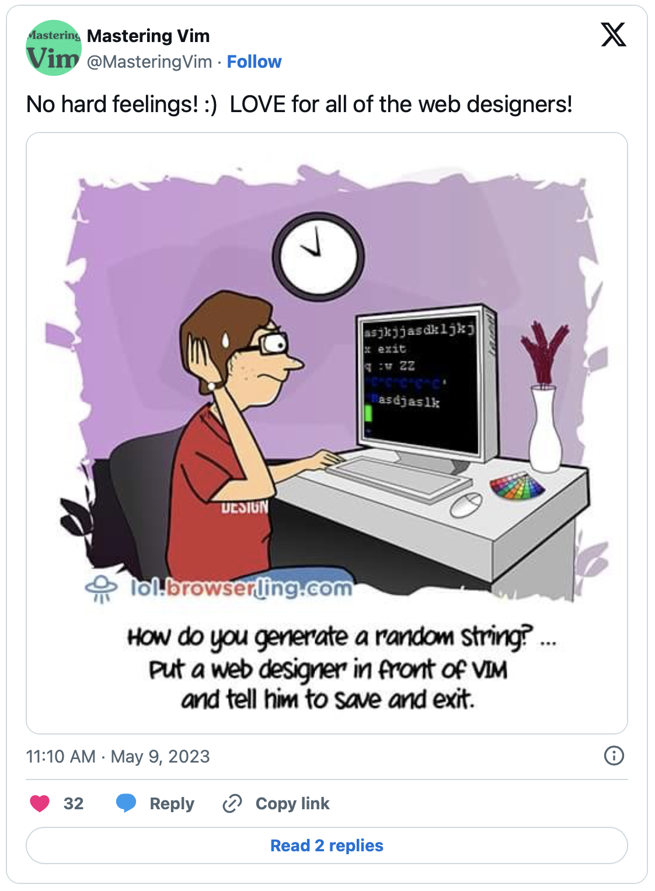
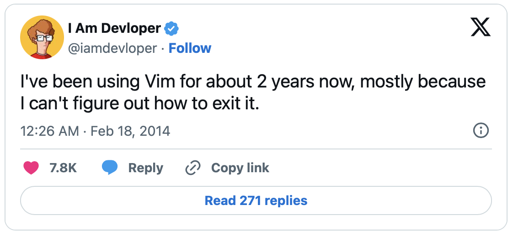
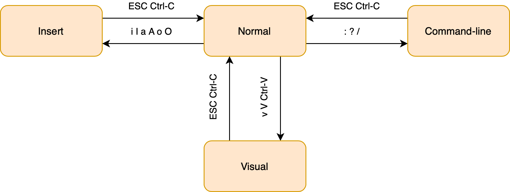
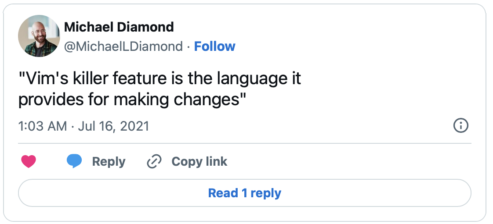
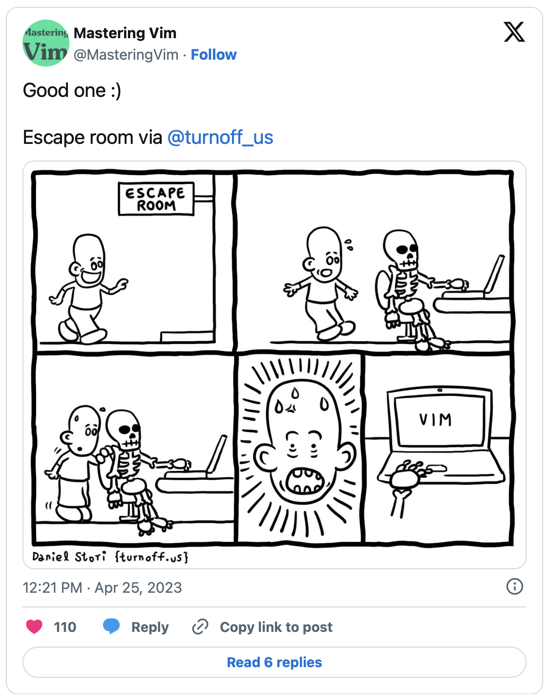
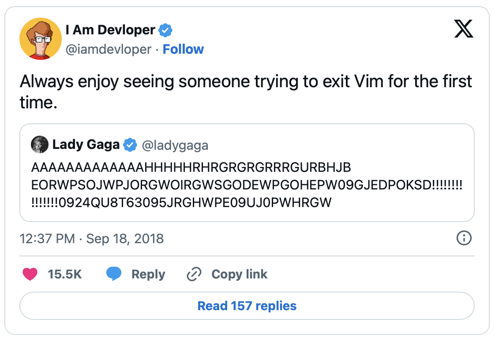

HOW TO LEAVE VIM...
HOW TO LEAVE VIM...
+
...and improve the capabilities
of other IDE's?
HOW TO LEAVE VIM...
+

...and improve the capabilities
of other IDE's?
HOW TO LEAVE VIM...
+
...and improve the capabilities
of other IDE's?
HOW TO LEAVE VIM?

AGENDA

- Modes in Vim
- Vim as language
- Further vim features
- Vim in other IDE's
Modes in Vim

Modes in
Regular Text Editors
Vim
- Normal
- Insert
- Visual
- Command-line
- ...
This is why Vim
seems to be very complex...
Transition of Vim Modes
Simplified
Let's see Modes in Action!
Vim as Language
Every Language needs a Syntax...
Let's see the Language in Action!
Further Vim Features

Recording a Macro
Record vim actions and reexecute them.
Macros in Action
Command Line Mode
Syntax: [range][command]
| :g/Hello/d | Delete all lines containing "Hello" |
| :%s/hello/bye/g | Replace all occurence of "hello" with "bye" |
| :3,7norm A; | Execute "A;" at lines 3 to 7 |
Let's see the Command Line Mode in Action!
Vim in other IDE's
Strengths of other IDE's
- Auto-completion
- Run and debug code
- Code documentation
- Code refactoring
- Easy project navigation
All comes out-of-the-box without further configuration needed!
Best of two Worlds
Integrate vim key bindings into other IDE's
Let's see this in action!
Thank you for your attention!
Any questions?
Image references
| Description | Url |
| 00-vim-logo.png | https://commons.wikimedia.org/wiki/File:Vimlogo.svg |
| 00-rider-logo.png | https://commons.wikimedia.org/wiki/File:JetBrains_Rider_Icon.svg |
| 00-vscode-logo.png | https://de.m.wikipedia.org/wiki/Datei:Visual_Studio_Code_1.35_icon.svg |
| 00-vs-logo.png | https://en.wikipedia.org/wiki/File:Visual_Studio_Icon_2022.svg |
| 01-how-to-not-leave-vim.png | https://x.com/brunns/status/941320476894334977 |
| 00-how-to-generate-a-random-string.png | https://x.com/MasteringVim/status/1655862766140268544 |
| 02-cant-figure-out-how-to-exit-vim | https://x.com/iamdevloper/status/435555976687923200 |
| 02-vim-modes-transition-diagram.svg | https://rawgit.com/darcyparker/1886716/raw/ eab57dfe784f016085251771d65a75a471ca22d4/vimModeStateDiagram.svg |
| 03-vims-killer-feature-is-the-language.png | https://x.com/MichaelLDiamond/status/1415809337029644289 |
| 03-what-the-hell-does-that-even-mean.png | https://imgflip.com/i/96j9d3 |
| 04-escape-room-vim.png | https://x.com/MasteringVim/status/1650807111515873281 |
| 05-vim-as-trap.png | https://x.com/MasteringVim/status/1656215868898959360 |
| 05-ideavim-plugin-logo.svg | https://plugins.jetbrains.com/plugin/164-ideavim |
| 05-vscode-vim-plugin-logo.png | https://marketplace.visualstudio.com/items?itemName=vscodevim.vim |
| 05-vsvim-plugin-logo.png | https://marketplace.visualstudio.com/items?itemName=JaredParMSFT.VsVim |
| 06-some-trying-to-exit-vim-for-the-first-time.png | https://x.com/iamdevloper/status/1041999624775626752 |